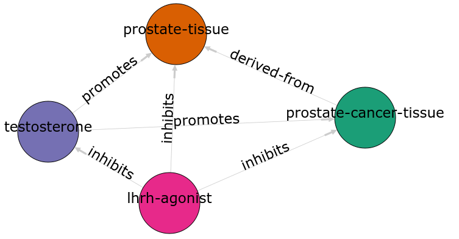
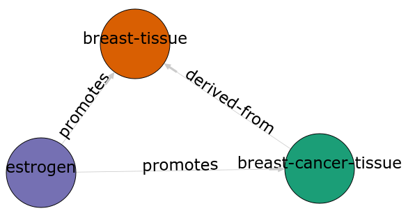
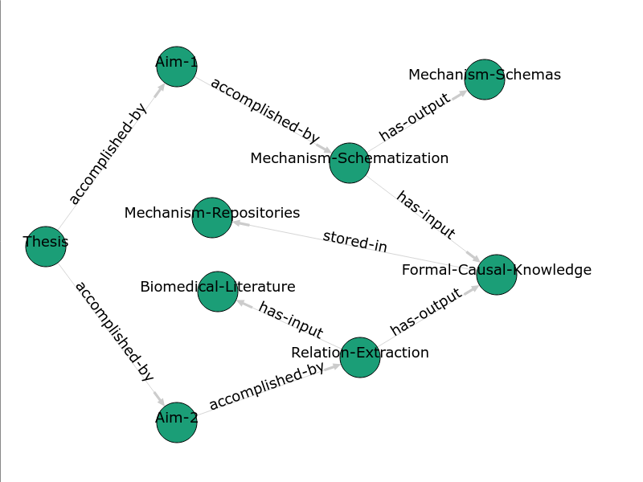

Scalable and systematic computational schematization of biological mechanisms
Comprehensive Exam: Thesis Proposal
10/29/2020
Targeted therapy for breast cancer: A Tale of Two Tissues
Prostate cancer analogy


Discovery of tamoxifen
Analogy between prostate and breast cancer


Computational Analogy
Definition
The comparison or alignment of two structured representations.
Tasks
- Retrieval
- Mapping
- Abstraction/generalization
- Rerepresentation
Computational methods
- Retrieval: Copycat/Metacat [hofstadterdouglasr.CopycatProjectModel2016]
- Mapping: Structure Mapping Engine (SME) [falkenhainer1986StructureMappingEngine]
- Abstraction: SEQL [kuehneSEQLCategoryLearning2000]
Mechanisms
How scientists explain "why?"
What is a mechanism?
Mechanisms are entities and activities organized such that they are productive of regular changes from start or set-up conditions to finish or termination conditions.
What is a mechanism schema?
A mechanism schema is a truncated abstract description of a mechanism that can be filled with more specific descriptions of component entities and activities.
[dardenStrategiesDiscoveringMechanisms2002]

Evaluating mechanism schemas: virtues and vices
| Virtues | Vices |
|---|---|
| Internal coherence | Superficiality |
| Testability | Incompleteness |
| Generates useful hypotheses | Incorrectness |
| Conservatism | |
| Simplicity | |
| Elegance | |
| Empirical adequacy | |
| Prediction | |
| Explanation | |
| External coherence | |
| Generality | |
| Unification |
Use of mechanism schemas
- Indexing/retrieval
- Comparison
- Transformation
- Induction
What do we expect to see during mechanism schematization?
- Abstraction of entities
- Modularization of activities
- Generalization of steps
Examples
- DNA replication
- Protein synthesis
- Enzyme activity
- Oxydative phosphorylation
- Inhibition of tumor growth
Aim 1
Develop and evaluate an automatic mechanism schematization method using existing biomedical ontologies, databases, and knowledge-bases and use the schema to hypothesize new relationships and disease mechanisms.
Hypothesis: Analogical alignment of concrete mechanisms will produce predictive and externally coherent mechanism schema.
Approach
- Algorithm
- Implementation
- Evaluation
- Preliminary results
Starting materials
- Causal knowledge → concrete mechanism graphs
- Other knowledge → knowledge graph
Goal
- Concrete mechanisms → schematization → mechanism schema
- Optimization: maximize coverage of concrete mechanisms while minimizing information loss
Algorithm overview
Given a set of concrete mechanisms and a knowledge graph, find a mechanism schema.
Step = causal relationship between two entities.
- Consider every possible step between two entities in the set of concrete mechanisms.
- Score each possible step.
- Assemble high scoring steps into the mechanism schema.
Scoring a step for each specific mechanism
Is there an analogous step in this mechanism?
- Find proxy entities using semantic similarity → analogous entities
- Causal path distance between proxy entities → analogous activity or mechanism module
What are proxy entities?
Step: tamoxifen → testosterone
What is an equivalent step between tamoxifen and testosterone in the prostate cancer mechanism?
Semantic Similarity [wangNewMethodMeasure2007]
Causal path distance
\[ C(a, b, m) = len(shortestpath(a, b, m)) \]
Final step score equation
\[ P(a, b, M) = \frac{1}{|M|} \sum_{m \in M} S_{GO}(a, a_m) S_{GO}(b, b_m) k^{-C(a_m, b_m, m)} \]
Constructing the mechanism schema
- Calculate step scores \(P(a, b, M)\) for all \(a\) and \(b\) in \(E_m\) for all \(m\) in \(M\).
- If \(P(a, b, M) \geq \theta\), add the step to the mechanism schema.
Actual implementation
- Causal knowledge → REACTOME/GO-CAMs/MecCog [fabregatReactomePathwayKnowledgebase2018],[thomasGeneOntologyCausal2019],[dardenHarnessingFormalConcepts2018]
- Other knowledge → KaBOB [livingstonKaBOBOntologybasedSemantic2015]
Prediction evaluation using leave-one out link prediction
- Input: GO-CAMs as concrete mechanisms
- Gold standard: Left out mechanism steps
- Success metric: F1-score
External coherence evaluation using hierarchical clustering
- Input: REACTOME pathways as concrete mechanisms
- Gold standard: Gene Ontology Biological Process (GO-BP) hierarchy
- Success metric: Tree edit distance [pawlikRTEDRobustAlgorithm2011]
Unification vs superficiality evaluation optimizing coverage vs information loss
- Input: GO-CAMs or REACTOME pathways
- Gold standard: None exists. Manual inspection
- Success metric: Comparison of coverage to information loss
Preliminary results
Future directions
- Case study: oncogenesis via developmental pathways
- Explore hyper-parameters:
- score threshold
- proxy-entity inclusion threshold
- causal path distance weight
- semantic similarity weights
Overview

Future directions
Connection between oncogenesis and developmental pathways
Logical coherence of mechanisms
Using extracted relations from the literature to inform mechanism schematization
Using mechanism schema to inform relation extraction
Bibliography
- [craverSearchMechanismsDiscoveries2014] Craver & Darden, In Search of Mechanisms: Discoveries across the Life Sciences, University of Chicago Press (2014).
- [dardenHarnessingFormalConcepts2018] Darden, Kundu, Pal & Moult, Harnessing Formal Concepts of Biological Mechanism to Analyze Human Disease, PLoS Computational Biology, 14(12), 1-10 (2018). doi.
- [dardenStrategiesDiscoveringMechanisms2002] Darden, Strategies for Discovering Mechanisms: Schema Instantiation, Modular Subassembly, Forward/Backward Chaining, Philosophy of Science, 69(S3), S354-S365 (2002). doi.
- [fabregatReactomePathwayKnowledgebase2018] Fabregat, Jupe, Matthews, Sidiropoulos, Gillespie, Garapati, Haw, Jassal, Korninger, May, Milacic, Roca, Rothfels, Sevilla, Shamovsky, Shorser, Varusai, Viteri, Weiser, Wu, Stein, Hermjakob & D'Eustachio, The Reactome Pathway Knowledgebase, Nucleic Acids Research, 46(D1), D649-D655 (2018). doi.
- [falkenhainer1986StructureMappingEngine] Falkenhainer, Forbus & Gentner, 1986 - The Structure-Mapping Engine, , 6 .
- [gentnerComputationalModelsAnalogy2011] Gentner & Forbus, Computational Models of Analogy, Wiley Interdisciplinary Reviews: Cognitive Science, 2, (2011). doi.
- [hofstadterdouglasr.CopycatProjectModel2016] Hofstadter & Mitchell, The Copycat Project: A Model of Mental Fluidity and Analogy-Making, ACM SIGEVOlution, 8(2), 4-4 (2016). doi.
- [kuehneSEQLCategoryLearning2000] Kuehne, Forbus, Gentner & 22.2000.770 Quinn, SEQL: Category Learning as Progressive Abstraction Using Structure Mapping, 22nd Annual Meeting of the Cognitive Science Society, (2000).
- [livingstonKaBOBOntologybasedSemantic2015] Livingston, Bada, Baumgartner & Hunter, KaBOB: Ontology-Based Semantic Integration of Biomedical Databases, BMC Bioinformatics, 16(1), 126 (2015). doi.
- [machamerThinkingMechanisms2000] Machamer, Darden & Craver, Thinking about Mechanisms, Philosophy of Science, 67(1), 1-25 (2000). doi.
- [mitchellCanGPT3Make2020] @miscmitchellCanGPT3Make2020, title = Can GPT-3 Make Analogies?, author = Mitchell, Melanie, year = 2020, month = aug, abstract = By Melanie Mitchell, file = /home/harrisonpl/Zotero/storage/VY27Q755/can-gpt-3-make-analogies-16436605c446.html, howpublished = https://medium.com/@melaniemitchell.me/can-gpt-3-make-analogies-16436605c446, journal = Medium, language = en
- [pawlikRTEDRobustAlgorithm2011] Pawlik & Augsten, RTED: A Robust Algorithm for the Tree Edit Distance, arXiv:1201.0230 [cs], (2011).
- [thomasGeneOntologyCausal2019] Thomas, Hill, Mi, Osumi-Sutherland, Van Auken, Carbon, Balhoff, Albou, Good, Gaudet, Lewis & Mungall, Gene Ontology Causal Activity Modeling (GO-CAM) Moves beyond GO Annotations to Structured Descriptions of Biological Functions and Systems, Nature Genetics, 51(10), 1429-1433 (2019). doi.
- [wangNewMethodMeasure2007] Wang, Du, Payattakool, Yu & Chen, A New Method to Measure the Semantic Similarity of GO Terms, Bioinformatics, 23(10), 1274-1281 (2007). doi.
Acknowledgments
- Advisor: Larry Hunter
- Committee: James Costello, Laura Saba, Manuel Lladser, and Robin Dowell
- Laura Stevens
- Hunter lab: Mike Bada, Bill Baumgartner, Elizabeth White (alumni)
- Computational Bioscience Program
- Colorado Biomedical Informatics Training Program grant T15 LM009451
Questions?
Role of statistics
- Simulate generality by compiling lots of specific examples and averaging over them
- Use knowledge to constrain statistical analysis
Quotes
Less is more.
Mechanism schemata, as well as descriptions of particular mechanisms, play many of the roles attributed to theories.
[machamerThinkingMechanisms2000]
The theories in the field of molecular biology can be viewed as sets of mechanism schemata.
[machamerThinkingMechanisms2000]
To my mind, this defeats the purpose of analogy-making, which is perhaps the only “zero-shot learning” mechanism in human cognition — that is, you adapt the knowledge you have about one situation to a new situation.
To do anything requires energy. To specify what is done requires information.
– Seth Lloyd
Improving power for analyzing rare diseases by transferring information from general contexts to the rare disease samples
– Casey Greene 02/04/2020 talk at CU Anschutz